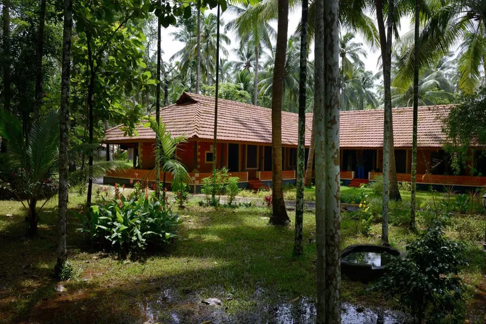
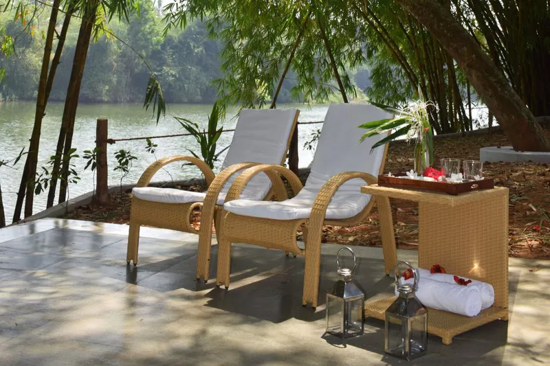
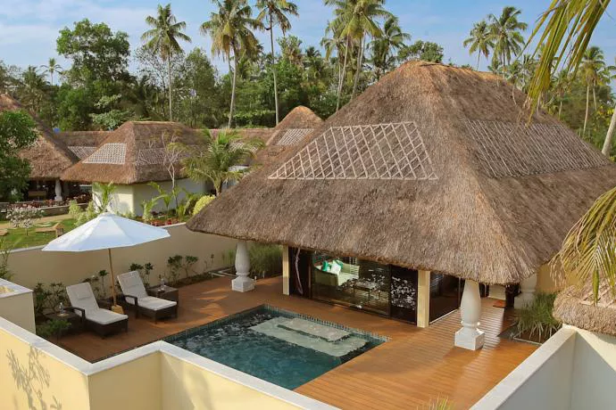
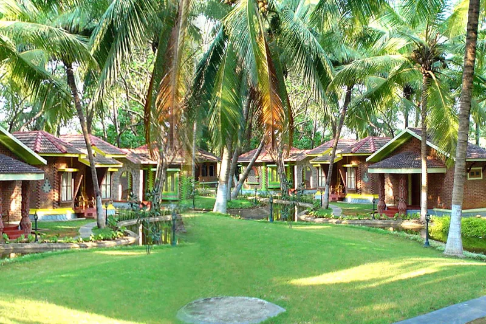
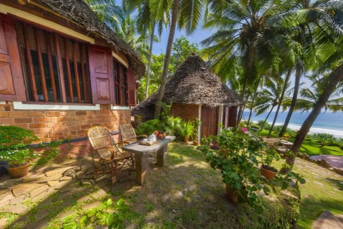

Developed in India over 3,000 years ago, Ayurvedic medicine is one of the oldest healing systems in the world, focused on a balance of therapies that heal the mind, body, and spirit. Ayurvedic resorts are plentiful in Kerala, a state of India along its southwestern Malabar Coast, due to the moist, humid climate and abundant supply of medicinal plants and herbs that grow there.
At these resorts in Kerala, not only can you rejuvenate your body, you can have a wonderful vacation as well. However, the treatments at some Ayurvedic resorts are much better than others. These top Kerala Ayurvedic resorts are all well managed and have an excellent range of properly administered Ayurvedic treatments.
To save money, go during the monsoon season (from June to September). The weather is perfect for Ayurveda at that time, too! You'll also find some excellent holistic India wellness centers in other states. However, if you have a serious illness, consider an Ayurvedic hospital as an alternative. Here are some of the ayurvedic centres:
- Traditional Treatment Center: Perumbayil Ayurveda Mana
Perumbayil Ayurveda Mana is housed in the ancestral property of the aristocratic Perumbayil family, who have been associated with Ayurveda for generations. This center is best suited to those with serious medical conditions that are willing to forego luxury to benefit from age-old Ayurvedic traditions administered by senior doctors from Kerala's leading Ayurveda families.Perumbayil Ayurveda Mana is situated in the Guruvayoor region of Thrissur in central Kerala. Numerous packages are available, ranging from general wellness programs to treatment of specific ailments. Its 20 guest rooms are spread over three categories and two buildings, all of which overlook a tranquil stream. The heritage rooms are located in an ancestral home dating back over 370 years while a newer-built replica contains the others.

- Unlimited Massages: Mekosha Ayurveda Spa Suites Retreat
Mekosha Ayurveda Spa Suited Retreat opened near Trivandrum in early 2018 and brings a notable new concept to India—in-suite spas and unlimited massages, whenever and wherever you want them. The experience at Mekosha is designed to be informal and friendly., and each 600-square-foot guest suite has its own adjoining private treatment area with a balcony overlooking the swimming pool and river beyond.As well as traditional Ayurvedic treatments administered by doctors according to guest requirements, international treatments such as Swedish massage are all available at Mekosha. Of course, Ayurveda is more than just treatments, it also extends to food, and at Mekosha, guests can learn how to cook Ayurvedic cuisine. Local ingredients are used, and there's a communal dining table for guests to chat with one another while eating meals.

- Ultimate Luxury: Carnoustie Ayurveda and Wellness Resort
The ultimate in luxury and pampering, award-winning Carnoustie Ayurveda & Wellness Resort at Marari beach offers holistic treatments that combine Ayurveda, yoga, mantra, and naturopathy. A wide range of programs is also available that ranges from detox to full-body healing, and staying at the resort includes individualized Ayurvedic diets for guests.Accommodations are provided in opulent villas with views of gardens and the ocean as well as individual private plunge pools. Named the Best Ayurveda Spa & Wellness Resort by the Geo Asia Spa Awards from 2013 to 2018, Carnoustie offers rejuvenation, detox, healing, anti-aging, weight loss, and sports medicine therapies in a picturesque setting.

- Back to Nature: Kairali Ayurvedic Healing Village Health Resort
At Kairali Ayurvedic Healing Village, Ayurvedic treatment is also about getting back to nature. The resort is set on 50 acres of lush land in the Palakkad district of Kerala, and there's even a stream running past each cottage. Room rates at the Kairali Resort include meals, consultation, one Ayurvedic herbal oil therapy, yoga, and meditation, and packages are available for numerous health concerns such as diabetes, arthritis, and chronic back pain.Although it's a resort, Ayurveda is treated seriously here, and the staff emphasizes healing the body, spirit, and the mind while staying here. Only vegetarian food is served, and no alcohol is sold or allowed on the premises. Guests are also encouraged to participate in early morning meditation and yoga sessions. The resort also has its own organic garden and swimming pool.

- Beach Side: Soma Manaltheeram Ayurveda Beach Village
Located right by the beach in Kovalam, Chowara, Soma Manaltheeram Ayurveda Beach Village is owned by the same family that introduced the concept of Ayurvedic resorts to India. Conveniently close to the several other health resorts as well as the Aazhimala Siva Temple, Soma Manaltheeram is a great destination for a more casual Ayurvedic retreat in an idyllic location.Soma Manaltheeram is a bit less traditional and more modern than many other resorts on this list, offering yoga and meditation in addition to Ayurveda. as yoga and meditation are offered in addition to Ayurveda and children under the age of 12 aren't permitted on the premises. Additionally, the rooms at Soma Manaltheeram blend tradition with modern comfort, with each guest getting their own private bungalow.
